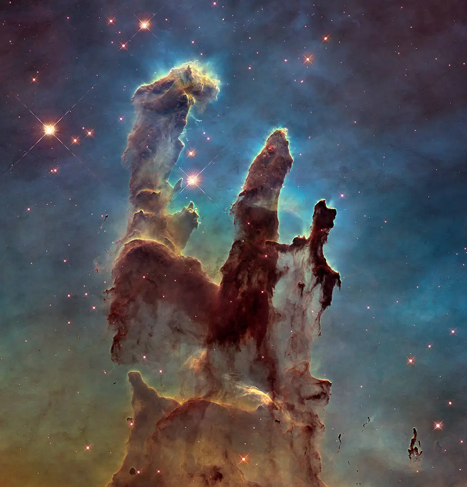
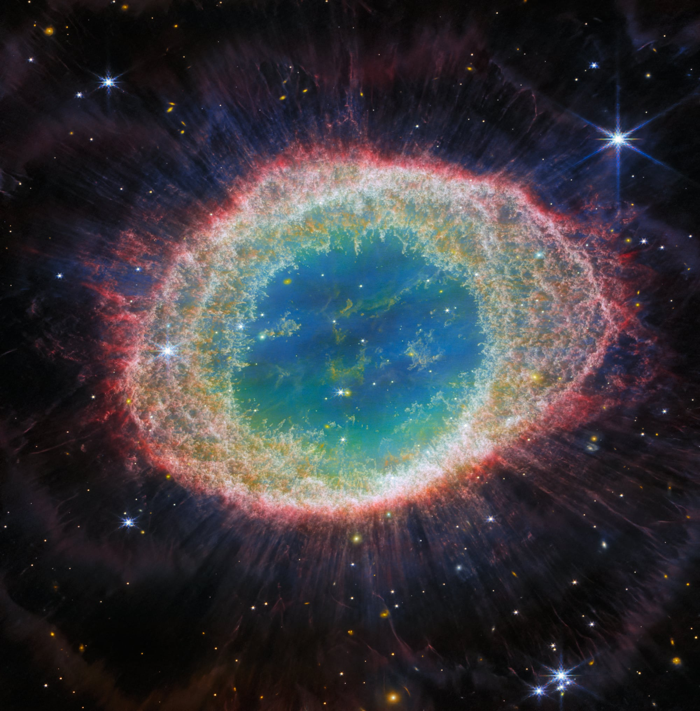
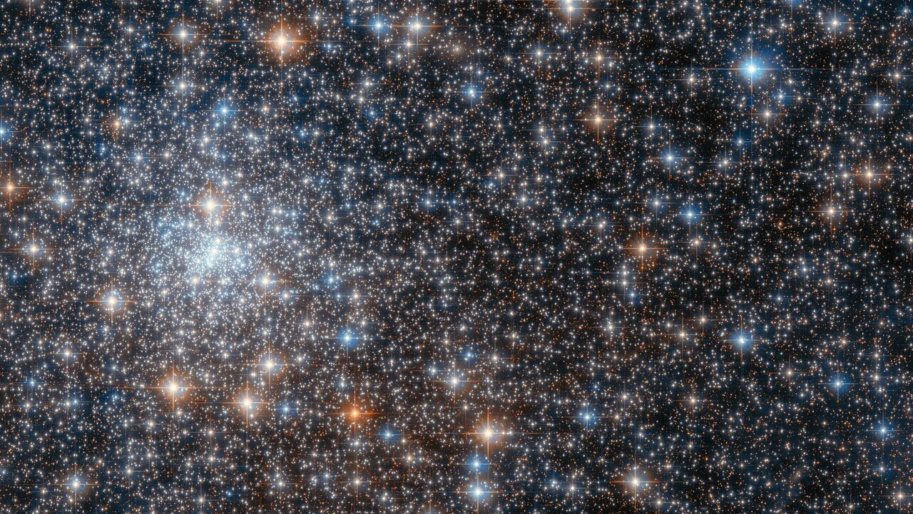

"Is that how an object would actually look using my eyes?"
This is one of the most common questions I'll see when it comes to photos taken by telescopes like Hubble and James Webb, and it makes sense! These images seem almost too spectacular, too incredible, to be real; so they must be fake. And honestly, they kinda are, just not in a the way one might think.
These telescopes don't "see" the way we as humans do. Light, as we as humans know it, is an incredibly small section of the whole electromagnetic spectrum. Below is a chart to really drive this home.

Telescopes often see the universe in a range in a spectrum that humans can't see. James Webb for example has multiple sensors, one of the main ones sees in the infared. This doesn't make any of the information obtained in this spectrum any less real, but it does make it hard to visually communicate that information. That's where coloring comes in. Scientists will often artificially color parts of an image that line up to a certain frequency of electromagnetic light. These frequencies can often line up with certain elements, so not only does this create a beautiful photo, it also creates a usefull photo.
Interestingly enough, Hubble actually DOES see in mostly the visable light space. So Hubble sees just like we do right? Well, not really. In order to pierce through the noise as much as possible, Hubble actually will put on filters to only let a really narrow frequency of light in. Essentially, Hubble is only accepting light of one color. The telescope will do this with multiple filters, looking at the same object. Then, once all the photos are taken, scientists will combine all the photos to make one awesome final colorful photo!
